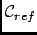

Next: Parameters
Up: Global Motion Filtered Trajectory
Previous: Global Motion Filtered Trajectory
Contents
Theory and implementation
It is often of interest to separate global motion from internal motion, both for quantitative analysis
and for visualization by animated display. Obviously, this can be done under the hypothesis that global and internal
motions are decoupled within the length and timescales of the analysis. nMOLDYN can create GMFT by filtering out global
motions (made of the three translational and rotational degrees of freedom), either on the whole system or on an user-defined subset,
by fitting it to a reference structure (usually the first frame of the MD). Global motion filtering uses a straightforward
algorithm:
- for the first frame, find the linear transformation such that the coordinate origin becomes the center of mass of
the system and its principal axes of inertia are parallel to the three coordinates axes (also called principal axes
transformation),
- this provides a reference configuration
,
- for any other frames f, finds and applies the linear transformation that minimizes the RMS distance between
frame f and
.
The result is stored in a new trajectory file that contains only internal motions. This analysis can be useful in case where diffusive
motions are not of interest or simply not accessible to the experiment (time resolution, powder analysis ...).
Next: Parameters
Up: Global Motion Filtered Trajectory
Previous: Global Motion Filtered Trajectory
Contents
pellegrini eric
2009-10-06